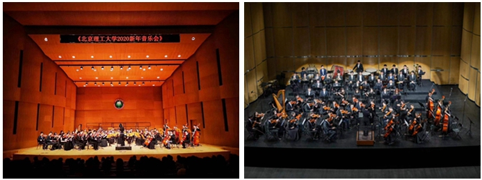

|
Miscellaneous
Life in symphony orchestra

2023.12.28, New Year's Concert in our new concert hall! (with Beijing Symphony Orchestra), Beijing Institute of Technology [微博直播：2024年房山区新年音乐会]
2023.05.14, The Spring Concert (Solo: The Lord of the Rings), Beijing Institute of Technology
2023.03.19, Chinese College Students “Challenge Cup” Closing Ceremony performance, China Association for Science and Technology
2022-2023, Concertmaster of BIT Student Symphony Orchestra
2022.02.17, Solo Concert (Reported by CGTN, Reference News, etc.), Main Media Center (MMC), Olympic Winter Games Beijing 2022
2021.07.02, My Undergraduate Graduation Party performance, Beijing
2021.04.10, The Spring Concert, Beijing Institute of Technology
2020.09, 80th Anniversary of Founding of Beijing Institute of Technology celebrated
2019.12.24, The 20th New Year's Concert, National Library Concert Hall, Beijing
2019-2020, Head of BIT Student Symphony Orchestra (Founded in 2000)
2017-2019, More than 10 music performances attended
2017.09.16, Duo for Violin (Over 5,000 spectators), Piece: Purple Passion
Thanks for the Rejection...
ACM Special Interest Group on Data Communication (SIGCOMM) Poster 2021 IEEE International Conference on Computer Communications (INFOCOM) 2021 IEEE Journal on Selected Areas in Communications (JSAC) IEEE/ACM International Symposium on Quality of Service (IWQoS) 2022 IEEE Transactions on Emerging Topics in Computational Intelligence (TETCI) Knowledge-Based Systems (KBS)
|